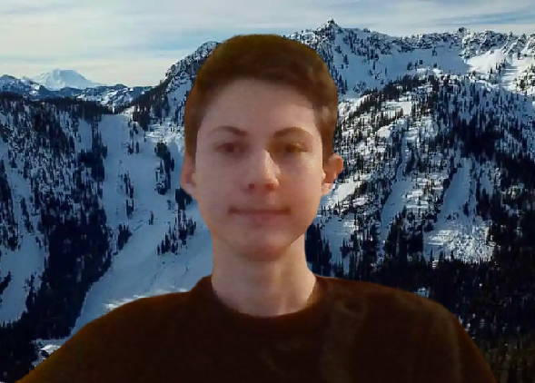

About Me:

Hello, I'm James and this is about me:
Current situation: I'm 17 and currently in college and have a part time job. First, no, I'm not in the running start program.
I'm considered homeschooled and an underage student. Second, no I'm not a nerd. And lastly, I'm currently trying not to let
college and work kill too much of my teen hood or take up too much of my life. A few more things about me are that I speak a
bit of Russian and love cold weather and snow. I've been to 15+ countries most in Europe like, Russia, Netherlands, United Kingdom,
Denmark, Finland, Sweden, Germany, Scotland, France, Belgium, Italy, Switzerland to name a few… From all the traveling I’ve done I’ve
realized it doesn’t matter where you go, it matters what you do and who you do it with.
Hobbies: Now this is the interesting paragraph. These things are what I live for: I like (more like love) skiing,
gold prospecting, rocketry, planes and anything to do with treasure hunting or the outdoors. Few cool things I've done so
far in life is flying a Cessna 172. I've found two diamonds in the cracks of sidewalks. (Turns out they are just cubic zirconia (
fake diamonds) so please don't hunt me down and try stealing them). I've found a Native American arrowhead while scratching the
ground with a stick-on Vashon Island. Turns out it's around 5000-10000 years old. Now some more about my favorite thing in life,
skiing. Last season I got into freestyle skiing, where you do tricks like grind rails and do flips and spins off jumps. I also got
into backcountry skiing. My home resort is Summit at Snoqualmie; however, I have skied in Banff Canada, Mt. Baker, Crystal Mt, and
Mission Ridge. The hardest trick I can do on skis is a 360. And the biggest cliff drop I've done is a 7 footer. This December I'm skiing
in Salzburg Austria which will be my first time skiing outside this continent.
Goals/Future: My goal after college is to transfer to Carleton University in Ottawa, Canada and get a degree in Aerospace Engineering.
Then apply to an airline or go to flight school to get my pilot's license and to become a commercial pilot. If things don't work out, I will have
an aerospace engineering degree under my belt and get a (not as exciting) job as an engineer. Another goal of mine is not to waste my life doing things
I don't enjoy just to make money like most people do in this world. If you waste all your time doing boring things to make money and then die young you
just wasted your whole life. So don't be like most of the people in this world. Lastly, I'll leave whoever is reading this with something to think
about that you probably have heard time and time again. At the end of the day do what you enjoy.
This is easier said than done but stop wasting your time.